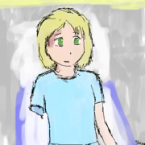
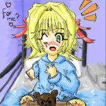

![[Everything Shii Knows]](../mediawiki/skins/common/images/wiki.png)
- For more archived Wikichan stuff, read my Wikichan page
Nurse-kun is a registered nurse who posted to 4chan when his boring everyday life in a nursing home was interrupted by the arrival of a 7-year-old girl. At first he merely thought this an interesting thing to tell 4chan about, but they pressed him to take action...

Contents |
The Awakening of Nurse-kun
Be aware that this is a story for hardened hearts. It was posted to a website where rape jokes and pornographic subtexts are par for the course, and you will see plenty of these. Nevertheless it develops into something beautiful as you go along.
Also, this story is unedited and there is a lot of fluff and nonsense. Most of the plot occurs at the start of each thread, with a few exceptions (like chapter 1).
- Chapter 1 Pooper Jokes and Courage
- Chapter 2 Teddy Bear and Chocolate Orange
- Chapter 3 Psychiatrists and Administrators
- Chapter 4 Nightmare and Event Log
- Chapter 5
- Chapter 6 Elite Beat Agents
- Chapter 7 Christmas
- Chapter 8 Pooper Jokes Revisited
- Chapter 9 Origami
- Chapter 10 Vs. the WWII Vet
- Chapter 11
- Chapter 12 Vs. the WWII Vet, Round Two
- Chapter 13
- Chapter 14 Valentines
- Chapter 15 Vs. the Racist Cripple
- Chapter 16 Library, Planetarium, Concert Hall
- Chapter 17 Zoo, Theater... (thread ended early)
- Chapter 18 (fake thread)
- Chapter 19 "I hate that girl in Elite Beat Agents"
- Chapter 20 Vs. the Trust Fund Cripple
- Chapter 21 getting an operation
- Chapter 22 at home
- Chapter 23 playing Pokemon
Nurse-kun has not posted on /b/ since 2 June 2007... but--!!
The Everyday Life of Nurse-Kun
- The Everyday Life of Nurse-Kun, September 2008 was posted to /tg/ of all places.
Why didn't Nurse-kun update anymore? I think he was probably afraid of being stalked by /b/. It wouldn't look good on the adoption papers for him to be associated with weirdos from the Internet and pooper jokes. In terms of how creepy /b/ got later on in 2008, it was probably a good move.
A Challenge to Nurse-Kun
On December 14, 2007 I received an anonymous tip from a professional statistician who was convinced Nurse-kun's story was fake. In the United States, car accidents are tabulated in a national database called the Fatality Analysis Reporting System (FARS). You can go to the FARS database yourself and query their results for 2006 and 2005. Very few children were extracted from cars. The guy who told me this claimed he couldn't find anyone matching Nurse-kun's description at all. Use the database yourself and see if you can determine Nurse-kun's home state.
Personally, the results I'm most interested in are:
-
Case 28-441 in 2005 (Coil Town, Mississippi). 3 occupants, 2 deaths. 5-year-old girl extracted from car with an incapacitating injury and taken to hospital. Currently living. Crash occurred July 24, 2005.Ruled out, this was a single father and two children. -
Case 54-188 in 2005 (Charleston, West Virginia). 3 occupants, 2 deaths. 5-year-old girl extracted from car with an incapacitating injury and taken to hospital. Currently living. Crash occurred July 21, 2005.Ruled out:
Comment by C. Reed: (regarding case 54-188: the mother did not die) "Man and toddler die in crash; 5-year old child injured" ... Anyway, if the story was true, there would be news reports about it somewhere given that local news will report on every fatal car wreck.
And indeed, it was.
Nurse-kun in DC
Comment by J. Stone: I believe I have found out the location of nurse-kun and ampu-tan I am 90% sure that they are located somewhere in Washington DC.
- For the first outing in chapter 16 they went to the Kennedy Center for Performing arts (Which in 1992 was renovated to be more handicapped accessible) The Smithsonian National Air and Space Museum I am not that sure about the library though. Next in chapter 19 for the hockey game they went to the Version center which hosts the Washington Capitols. And finally in chapter 21 when they went on their walk it was at the Tidal Basin and or West Potomac Park which as Nurse-kun stated is usually packed with people watching the cherry blossoms bloom.
Fan art
When these threads were being posted there was a lot of fan art being made. Nurse-kun saved most of it, but he hasn't been seen in a while. Personally the only picture I saved was my own.
|
  |   |
Thumbnails we don't have full versions of
These are from cached versions of the original threads. When Wikichan crashed all the fan art was lost. Please e-mail me the large versions of these if you have them.